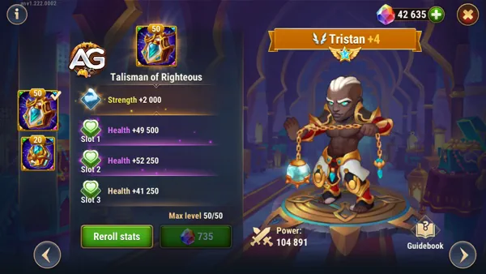
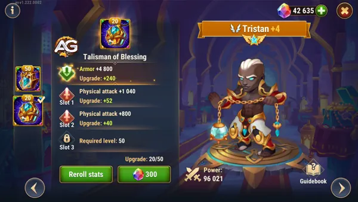
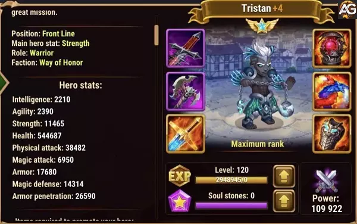

Guia do Tristan Hero Wars Alliance
- Por: Alexandre Domingos. .
Tristan, um herói versátil em Hero Wars, destaca-se tanto como um lutador da linha de frente quanto como um herói de suporte. Com habilidades que contrariam magos e fortalecem aliados, ele é uma adição valiosa para qualquer equipe. Este guia explora suas habilidades, talismãs e prioridades de estatísticas, ajudando você a maximizar seu potencial no campo de batalha.
Desvendando Tristan: Visão Geral do Herói e Tier List Geral
| Atributos Principais | Valores |
|---|---|
| Posição: | Frontal |
| Função: | Guerreiro |
| Atributo Principal: | Força |
| Fação: | Honra |
| Como Obter: | Eventos, Baú Heroico, Loja do Caminho do Herói |
| Tier List 2025 | Classificação |
|---|---|
| Tier List Geral: | S+ |
| Tier List da Hidra: | A+ |

Estratégia sobre como usar Tristan em Hero Wars Alliance
Subestimar Tristan é um erro grave, pois ele tem o potencial de se tornar um herói de classificação S+ formidável quando colocado na composição certa de equipe.
Forças e Habilidades
Tristan brilha intensamente ao enfrentar equipes predominantemente compostas por magos. Sua habilidade, "Juiz do Feiticeiro", é projetada para mirar em heróis com as estatísticas mais altas de perfuração mágica, drenando efetivamente sua energia e anulando suas habilidades mágicas.
Além disso, os artefatos de Tristan melhoram suas habilidades de perfuração de armadura, tornando-o um aliado ideal para heróis como Artemis e Yasmine. Ao serem combinados com ele, Tristan aumenta significativamente sua produção de dano, pois ambos os heróis se beneficiam de sua perfuração de armadura, estabelecendo uma presença formidável no campo de batalha. Tristan se destaca excepcionalmente bem em equipes com Artemis meta e Yasmine meta, tornando-o uma escolha convincente para investimento.
Habilidades de Tristan
- Fúria do Purificador: Tristan libera o poder do Relicário Demoníaco em inimigos próximos, causando dano proporcional ao seu ataque físico.
- Dano: Max(18620) - (25% do Ataque Físico + 75 * (Nível da Habilidade))
- Zelo Justo: Tristan invoca a Luz para conceder Zelo Justo a si mesmo e aos aliados à sua frente, aumentando o ataque físico deles por uma duração de 5 segundos.
- Bônus de Ataque Físico: Max(12496) - (20% do Ataque Físico + 40 * (Nível da Habilidade))
- Palavras-chave: Buff
- Juiz dos Feiticeiros: Tristan liberta almas demoníacas do Relicário Demoníaco, mirando inimigos com a maior estatística de Perfuração Mágica. Cada acerto causa dano e queima 100 de energia. Se nenhum inimigo possuir uma estatística de Perfuração Mágica, os demônios miram no inimigo mais distante.
- Dano: Max(4924) - (5% do Ataque Físico + 25 * (Nível da Habilidade + 20))
- Energia Queimada: Max(100) - ((Nível da Habilidade + 20) - 20)
- Vanguarda Abençoada: Sempre que um aliado à frente de Tristan ganha energia, ele ganha a mesma quantidade de energia, aumentando ainda mais sua capacidade de usar habilidades poderosas.
- Chance de Ganho de Energia: A chance de ganhar energia de um aliado é reduzida se o nível do alvo estiver acima do nível da habilidade. Máx. 120 = (Nível da Habilidade + 40)
Guia de Análise dos Talismãs de Tristan em Hero Wars Alliance
Tristan: Talismã do Justo
O Talismã do Justo é o primeiro talismã de Tristan e foca em aumentar sua sobrevivência enquanto melhora suas estatísticas ofensivas.
| Slot | Estatísticas | Pontos |
|---|---|---|
| 0 | Força | +2000 |
| 1 | Saúde | +60500 |
| 2 | Saúde | +60500 |
| 3 | Saúde | +60500 |
Principais Características:
- Bônus de Força e Saúde: Proporciona um aumento significativo na Força de Tristan, melhorando seu Ataque Físico e sua reserva geral de Saúde.
- Slots de Saúde: Oferece até 3 slots, cada um podendo atingir 60.500 de Saúde, dependendo do refinamento.

Impacto em Tristan:
- Aumento de Sobrevivência: A saúde adicional permite que Tristan suporte mais dano, tornando-o mais durável na linha de frente.
- Sinergia Ofensiva: A estatística de Força não apenas aumenta sua saúde, mas também melhora seu Ataque Físico, amplificando o dano de suas habilidades.
- Vantagem de Posicionamento: Embora Tristan não seja primariamente um tanque, o aumento de saúde garante que ele possa se manter firme próximo à linha de frente enquanto apoia seus aliados.
Este talismã é ideal para melhorar a durabilidade de Tristan enquanto mantém sua presença ofensiva, tornando-o uma escolha versátil para várias composições de equipe.
Tristan: Talismã da Bênção
O Talismã da Bênção é o segundo talismã de Tristan, projetado para fortalecer ainda mais seu papel duplo como lutador da linha de frente e herói de suporte.
Principais Características:
- Bônus de Defesa Física: Fornece Armadura adicional, melhorando a resistência de Tristan contra dano físico.
- Slots de Ataque Físico: Até 3 slots de bônus de Ataque Físico, melhorando significativamente seu potencial de dano.

Impacto em Tristan:
- Melhoria na Defesa Física: A armadura adicional ajuda Tristan a absorver mais dano físico, tornando-o mais confiável na linha de frente, quase como um tanque.
- Habilidades Aprimoradas: O aumento no Ataque Físico melhora diretamente a eficácia de suas habilidades, especialmente:
- Fervor Justo: Concede um bônus de Ataque Físico para Tristan e seus aliados próximos, fortalecendo ainda mais a ofensiva de sua equipe.
- Contra-ataque a Equipes Mágicas: As habilidades de Tristan, como atingir inimigos com Penetração Mágica e roubar energia deles, tornam-se ainda mais impactantes com estatísticas de ataque mais altas.
- Sinergia com Penetração Física: Tristan já possui uma Penetração Física significativa de seus artefatos e estatísticas. O poder de ataque adicional permite que ele cause danos substanciais a inimigos da linha de frente, quebrando rapidamente suas defesas.
Este talismã é perfeito para maximizar as capacidades ofensivas de Tristan enquanto fornece defesa suficiente para torná-lo uma presença durável na linha de frente.
Comparação e Resumo dos Talismãs
Talismã do Justo:
- Foca em Saúde e Força para aumentar a durabilidade de Tristan e melhorar suas estatísticas de ataque.
- Mais indicado para jogadores que buscam reforçar a sobrevivência de Tristan enquanto mantém seu papel como lutador da linha de frente.
Talismã da Bênção:
- Enfatiza Armadura e Ataque Físico para tornar Tristan mais resistente contra dano físico, ao mesmo tempo que melhora significativamente suas habilidades ofensivas.
- Ideal para combater equipes físicas e aumentar a utilidade de Tristan como um herói híbrido de luta e suporte.
Qual Talismã Você Deve Priorizar para Tristan?
- Para Sobrevivência: Se Tristan frequentemente tem dificuldades para sobreviver nas batalhas, o Talismã do Justo é um excelente ponto de partida, pois oferece um equilíbrio entre saúde e melhorias ofensivas.
- Para Potencial Ofensivo: Para jogadores que desejam maximizar a capacidade de Tristan de causar dano e enfrentar inimigos, especialmente magos com Penetração Mágica, o Talismã da Bênção é a escolha superior.
Para um desempenho ideal, aprimorar ambos os talismãs permitirá que Tristan se destaque em vários papéis, seja apoiando sua equipe ou eliminando ameaças da linha de frente.
Pontos Positivos e Negativos de Tristan
Pontos Positivos
- Ganha muita energia
- Artefato de Perfuração de Armadura
- Contra-ataque para magos com alta perfuração mágica
- Queima a energia de magos com alta perfuração mágica
Pontos Negativos
- Age mais como suporte para Artemis do que como realmente um guerreiro
- Fraco contra hidras
Prioridade na Evolução dos Atributos de Tristan
Dicas de Prioridade de Glifos:
Priorize glifos de vida para aumentar a durabilidade de Tristan no campo de batalha, garantindo que ele possa resistir aos ataques inimigos por mais tempo.
A força é importante para aumentar o poder de ataque físico de Tristan, permitindo que ele cause mais danos aos inimigos durante o combate.
Aumentar a perfuração de armadura é crucial para garantir que os ataques de Tristan possam perfurar as defesas inimigas de forma mais eficaz, maximizando seu potencial de dano.
Ataque físico adicional pode aumentar ainda mais o poder de ataque de Tristan, permitindo que ele cause danos significativos aos inimigos.
Reforçar a armadura de Tristan pode ajudar a reduzir o dano recebido dos ataques físicos inimigos, aumentando assim sua sobrevivência no campo de batalha.
| Prioridade | Glifos |
|---|---|
| 1º | Vida |
| 2º | Força |
| 3º | Perfuração de Armadura |
| 4º | Ataque Físico |
| 5º | Armadura |
Dicas de Prioridade de Artefatos:
O principal artefato a priorizar é a arma que fornece perfuração de armadura adicional, aumentando a eficácia dos ataques de Tristan contra inimigos com alta defesa.
O anel pode oferecer benefícios adicionais de vida ou resistência, melhorando a durabilidade de Tristan durante o combate.
O livro pode fornecer aumentos significativos no poder físico e na perfuração de armadura de Tristan, fortalecendo suas habilidades e aumentando seu potencial de dano físico.
| Prioridade | Artefatos |
|---|---|
| 1º | Arma (Perfuração de Armadura) |
| 2º | Anel |
| 3º | Livro |
Melhor Skin para Tristan em Hero Wars Alliance
Descubra a ordem mais eficaz de evolução das skins do Tristan em Hero Wars Alliance com base na utilidade real em batalha e sinergia.

Skin Padrão (Força +1.365)
Concede vida extra e ataque físico (se Força for o atributo principal do herói). Aumenta a sobrevivência e o escalonamento de dano.
Prioridade de Evolução: Muito Alta – Atributo principal para sobrevivência e dano das habilidades.

Skin Estelar (Penetração de Armadura +10.650)
Aumenta a capacidade de Tristan causar dano ao ignorar a armadura inimiga, melhorando a eficácia de habilidades como Fúria do Purificador.
Prioridade de Evolução: Alta – Grande impacto no dano contra tanques.

Skin Solar+ (Ataque Físico +14.190)
Aumenta diretamente o dano das habilidades em geral. Combina bem com a maioria das suas habilidades, especialmente com Fúria do Purificador.
Prioridade de Evolução: Média Alta – Grande bônus no dano de habilidades, especialmente em formações ofensivas bem protegidas.

Skin Esportiva (Esmagamento +5.920)
Aumenta todos os tipos de dano contra inimigos com pouca vida. Ótima ferramenta finalizadora em situações de explosão ou limpeza.
Prioridade de Evolução: Média – Útil em batalhas específicas para garantir eliminações.

Skin Abismo Sombrio (Armadura +10.650)
Melhora a sobrevivência de Tristan na linha de frente, o que é importante devido à sua posição, mesmo sendo um guerreiro.
Prioridade de Evolução: Média – Ajuda Tristan a resistir mais tempo nas batalhas.

Skin Baile de Máscaras (Defesa Mágica +10.650)
Melhora a resistência contra equipes focadas em magia. Opção defensiva com utilidade situacional, dependendo do time inimigo.
Prioridade de Evolução: Baixa – Situacional; útil principalmente contra equipes com muito dano mágico.

Tristan vs Hidra
Tristan prova ser um herói excepcional ao enfrentar Hidras, especialmente quando combinado com Artemis em uma composição de equipe. Suas habilidades permitem que ele cause danos significativos e forneça suporte rápido de perfuração de armadura para Artemis através de seus artefatos.
Para batalhas contra a Hidra da Água, a composição de equipe ideal de Tristan inclui Fafnir, Dorian, Artemis, Tristan e Galahad. Esta configuração garante uma mistura equilibrada de ataque e defesa, maximizando a eficácia da equipe contra os desafios da Hidra da Água.
- Sugestão de equipe de Tristan para a Hidra da Água: Fafnir, Dorian, Artemis, Tristan, Galahad
Tristan em Batalhas
Forte Contra
- Lars, Faceless, Lilith, Mojo, Orion
Contra-Ataca
- Satori, Jorgen, Dante, Martha
Sinergia da Equipe de Tristan
A sinergia de Tristan se estende além dos magos para outros heróis dentro de sua facção. Ele se combina excepcionalmente bem com Galahad, concedendo energia dupla e perfuração de armadura para compensar a falta de perfuração de armadura de Galahad, fortalecendo assim sua eficácia geral no combate.
Além disso, Tristan forma uma dupla poderosa com heróis como Artemis e Fafnir, criando equipes sinérgicas capazes de dominar os oponentes. Investir no desenvolvimento de Tristan pode render dividendos substanciais na eficácia da equipe e no desempenho geral.
Melhores times de Tristan
| # | Equipe |
|---|---|
| 1 | Fafnir, Artemis, Tristan, Astaroth, Julius |
| 2 | Fafnir, Tristan, Yasmine, Astaroth, Julius |
| 3 | Fafnir, Sebastian, Yasmine, Tristan, Astaroth |
| 4 | Fafnir, Judge, Yasmine, Tristan, Julius |
| 5 | Fafnir, Artemis, Tristan, Luther, Chabba |
| 6 | Fafnir, Artemis, Tristan, Luther, Cleaver |
| 7 | Fafnir, Artemis, Tristan, Galahad, Luther |
| 8 | Jet, Sebastian, Tristan, Galahad, Luther |
| 9 | Jet, Sebastian, Tristan, Galahad, Cleaver |
| 10 | Jet, Sebastian, Tristan, Galahad, Rufus |
| 11 | Fafnir, Artemis, Mojo, Tristan, Galahad |
Conclusão do Guia de Tristan
A versatilidade de Tristan e seu potencial sinérgico o tornam uma adição valiosa para qualquer composição de equipe, especialmente ao enfrentar oponentes com muitos magos. Sua habilidade de fornecer perfuração de armadura e impulsos de energia para os aliados, juntamente com sua sólida produção de dano, garante que ele possa se destacar em vários cenários de batalha.
Ao investir no desenvolvimento de Tristan e entender seu papel dentro de sua equipe, você pode aumentar significativamente suas chances de vitória nas batalhas de Hero Wars Alliance. Seja enfrentando Hidras, competindo na arena ou progredindo nas fases da campanha, a presença de Tristan pode fazer a diferença no sucesso de sua equipe.
Sugestões de Vídeo:
Deixe Sua Opinião!
Você gostou das nossas dicas do Guia do Tristan? Há algo que não entendeu ou gostaria de sugerir mudanças? Convidamos você a se juntar à nossa sessão de comentários na página do Alexandre Games Blog. Não hesite em expressar sua opinião, clarificar suas dúvidas e compartilhar sua sugestões.
Clique no botão abaixo para começar:
 Ártemis
Ártemis Fafnir
Fafnir Sebastian
Sebastian